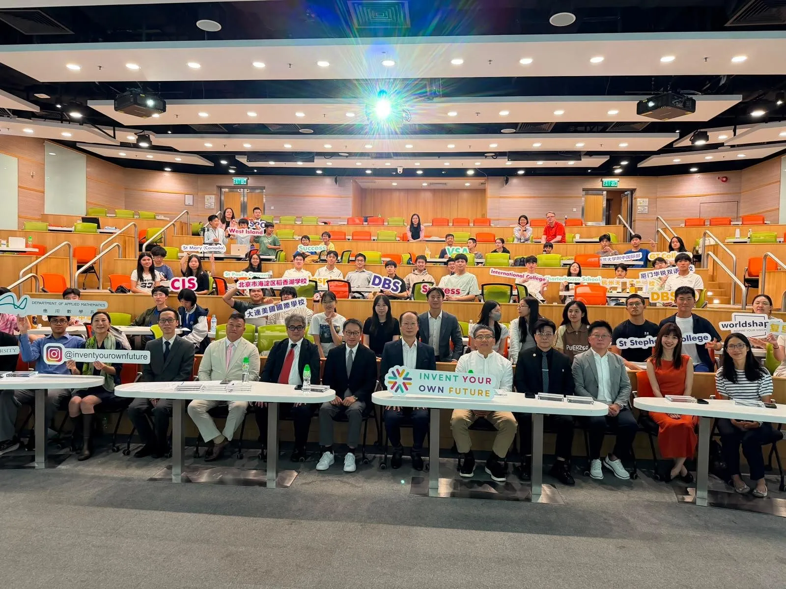
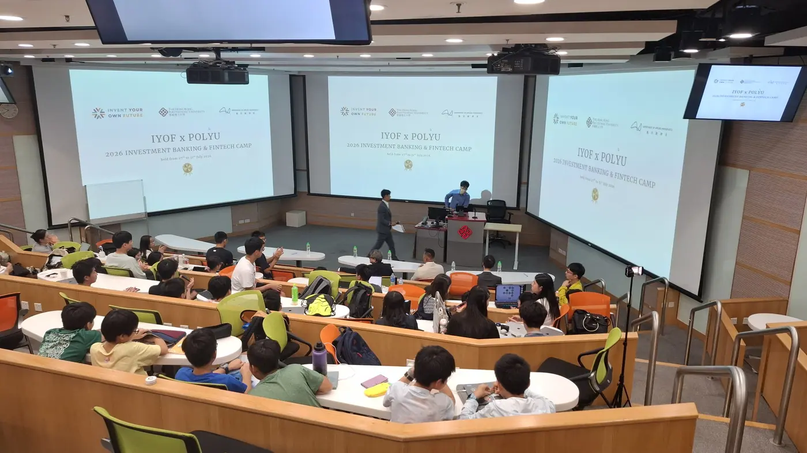
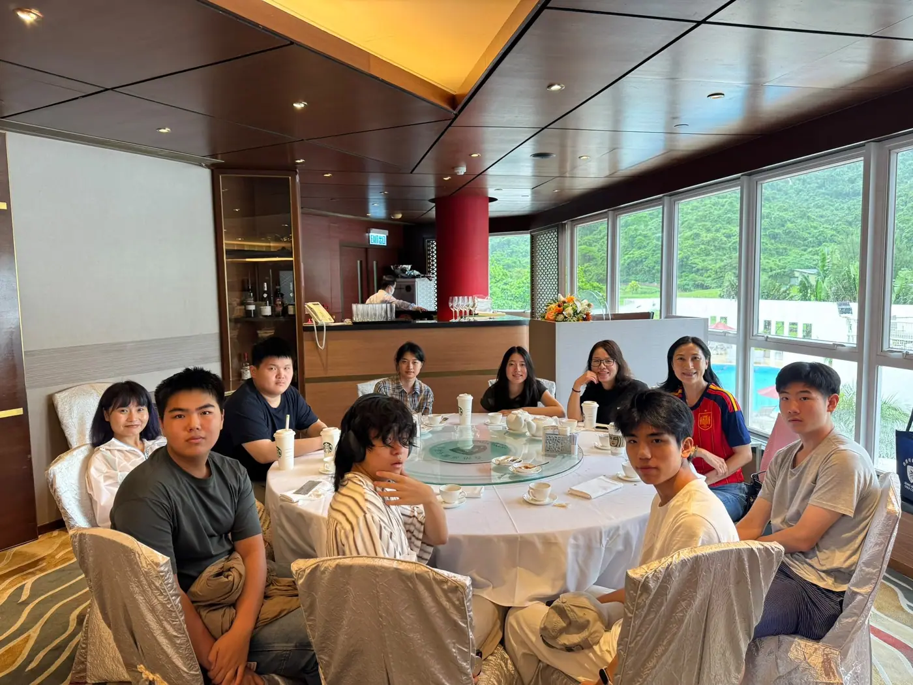

Fintech & Investment Banking Summer Camp
– · Hong Kong PolyU
Hosted at The Hong Kong Polytechnic University, the PolyU x IYOF Fintech & Investment Banking Bootcamp gave upper secondary students a rigorous, hands-on introduction to the world of finance.
Across five intensive days, students stepped into a learning environment that combined quantitative thinking, market research, portfolio construction, and live presentation experience. Led by industry professionals and university educators, the bootcamp introduced students to how investment ideas are formed, tested, challenged, and communicated in the real world.
Read the fintech camp recap
The programme moved from the ground up: financial foundations, mathematics, and statistics in the earlier sessions; risk and return assessment, modelling, valuation, and derivatives in the technical core; and broader personal-development themes such as self-management, breathing, resilience, goal-setting, and leadership as part of the wider learning experience. Students were encouraged not only to understand markets, but also to think more clearly about decision-making, responsibility, and what it means to lead.
A major highlight of the bootcamp was the AI Fund Manager Competition. Students were divided into four teams, each operating as its own simulated fund management company. Within each team, student leaders took on roles such as CEO, portfolio manager, research lead, and risk manager as they worked together to design an investment strategy for a US$1,000,000 client mandate under a live macro scenario. Their task was not simply to pick assets, but to build a coherent portfolio, explain the investment thesis, assess risks, and present their recommendation with clarity and conviction.
The final capstone showcase brought this work to life. Across the afternoon presentation session, teams presented their portfolios and decks, defended their reasoning, and demonstrated both technical understanding and teamwork. The closing ceremony featured speeches from IYOF leadership, senior business figures, advisors, educators, and community supporters, followed by certificate presentations for students and teaching assistants, recognition for lecturers and speakers, and awards for the strongest-performing teams.
More than just a finance camp, the programme reflected IYOF’s commitment to making future-focused education more accessible, practical, and inspiring. By combining technical finance training with communication, leadership, and real-world problem-solving, students were challenged to think not only like learners, but like builders, decision-makers, and future leaders.
Participating students represented the following schools:
Diocesan Boys' School, Victoria Shanghai Academy, St Stephen's Girls' College, St Paul's Convent, West Island School, St Paul's Co-educational College, Bangkok Patana School, GT College, Hong Kong International School, Holy Trinity College, St Stephen's College, Chinese International School, International College, 杭州市师范大学附属中学国际部, 无锡第一中学, 南师附中, 北京市海淀区稻香湖学校, 大连美国国际学校, 杭州二中教育集团·天元蕙兰学校, Long Cheng High School, Charterhouse School, 浙大附属学校, 厦门华锐双语学校, 复旦大学, 西北工业大学附属中学, and St Mary Secondary School (Canada).